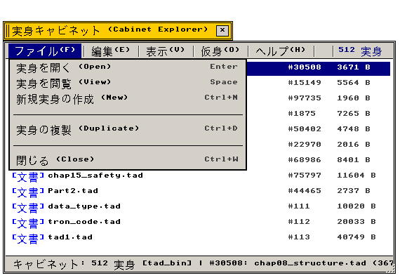
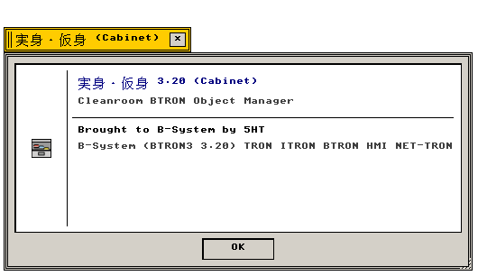

キャビネット (Cabinet)
実身・仮身マネージャ · ハイパーメディア探索 · 属性インスペクタ
実身（Real Object）および仮身（Virtual Object）の階層非依存ファイルマネージャ
"Non-hierarchical document filing manager orchestrating network-linked Real and Virtual Bodies."
← アプリケーション一覧 (Applications Index)
キャビネット（Cabinet） — キャビネット（Cabinet）は、B-Systemの超構造化ハイパーメディアファイリングシステムを管理するコアツール。従来のディレクトリ構造を超えた多重リンク構造を視覚化します。
"Hypermedia document organizer traversing bi-directional links between Real Bodies and Virtual Objects without path constraints."
画面プレビュー (Screen Preview)

実機描画フレームバッファより自動抽出された実身キャビネット・エクスプローラ (ファイルメニュー展開・実身一覧表示)

実機描画フレームバッファより自動抽出された透過バージョン情報ダイアログ (About Cabinet)
概要 (Overview)
キャビネット（Cabinet）は、B-Systemの超構造化ハイパーメディアファイリングシステムを管理するコアツール。従来のディレクトリ構造を超えた多重リンク構造を視覚化します。
"Hypermedia document organizer traversing bi-directional links between Real Bodies and Virtual Objects without path constraints."
1. メニュー構造と操作体系 (Menu Architecture & Operations)
Cabinet が提供する標準メニューバー構造および操作体系の仕様。
"Standard menu bar hierarchy and interactive command bindings."
| メニュー項目 |
機能説明 (Functional Description) |
技術仕様・C99実装 (C99 Architecture) |
| ファイル (File) |
新規実身作成、別名保存、実身プロパティ表示、閉じる |
src/apps/vobj_manager.c |
| 仮身 (Object) |
仮身リンク作成、実身の直接編集起動、実身ロック制御 |
VOBJ_RECORD 参照解決 |
| 表示 (View) |
アイコン寸法切替（32×32 / 64×64）、更新順ソート、属性一覧 |
動的グリッド再計算 (96×72 / 110×104) |
| ヘルプ (Help) |
バージョン情報（Nano About Box 420×170px） |
app_menu_create_about_dialog |
2. 機能仕様とアーキテクチャ (Functional & Architecture Specifications)
Cabinet アプリケーションの内部構造、データモデル、およびシステムコール仕様。
"Internal architectural components, memory models, and system call bindings."
| コンポーネント・機能名 |
動作概要と機能仕様 (Functional Specification) |
技術仕様・C99構造体 (C99 Implementation) |
| 動的グリッド追従 |
外観設定のアイコンサイズ変更に応じ、グリッド幅を自動スケーリング（32px: 96×72px、64px: 110×104px）。 |
appearance_get_icon_size() |
| 実身直接起動 |
仮身ダブルクリックにより、メディア設定に基づき対応するエディタ・ビューアを即座に非同期起動。 |
src/settings/media.c 連携 |
| 実身整合性検査 |
孤立仮身の検出、多重参照カウントの自動整合性維持アルゴリズム。 |
参照カウンタ自動ガーベジコレクション |
| 3Dベベルメニュー |
Classic 3DベベルおよびModern Flat Cardメニュー様式へ完全対応。 |
APP_MENU_BAR 共通エンジン |
関連コンポーネント (Related Components)